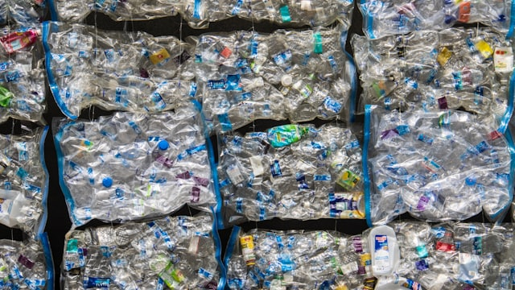
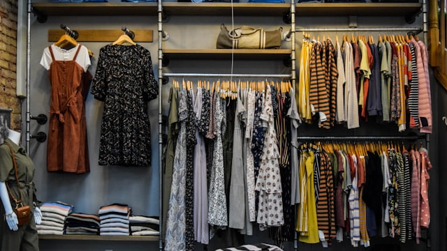

Maßgeschneiderte Hilfsmittel, die die Faserlänge erhalten, Staub reduzieren und Kardierbarkeit & Verspinnbarkeit verbessern – für einen höheren Rezyklatanteil. Für mechanisches und chemisches Recycling sowie rPET.
Speziell für recycelte Rohstoffe entwickelt: Die LAMBAFIL® R Series senkt Kurzfaseranteil und Staubbildung, verbessert Kardierbarkeit und Verspinnbarkeit deutlich – und ermöglicht so einen höheren möglichen Rezyklatanteil im fertigen Textilprodukt.
Chemische Recyclingprozesse stellen besondere Anforderungen an Entschäumung und Waschchemie. AGATEX liefert beides – exakt auf die Prozessbedingungen des chemischen Textilrecyclings formuliert.
Polyesterfasern aus chemisch recycelten PET-Chips erfordern Spinnpräparationssysteme, die speziell auf die rheologischen und Oberflächen-Eigenschaften von recyceltem Polyester abgestimmt sind.
Unsere Hilfsmittel unterstützen die gesamte Recycling-Wertschöpfungskette – vom Faserrecycler bis zur Marke mit Rezyklatanteil-Zielen.


AGATEX entwickelt Recycling-Chemie nicht im Labor allein – sondern in strategischen Partnerschaften mit den Instituten, die das mechanische Textilrecycling vorantreiben.
Mechanisch, chemisch oder über rPET – an jedem Punkt entscheidet die richtige Chemie über die Qualität der recycelten Faser.
Recycelte Rohstoffe sind anspruchsvoll und variabel. Statt Standardprodukten aus dem Katalog entwickeln wir mit Ihnen die passende Chemie – flexibel, schnell, auf Augenhöhe.
Unser hauseigenes Labor entwickelt individuelle Formulierungen für genau Ihr Rezyklat – kein Standardprodukt, sondern Chemie für Ihren Rohstoff.
Als Familienunternehmen entscheiden wir schnell. Neue Chargenqualität oder neuer Rohstoff? Wir reagieren in Stunden, nicht Wochen.
Sie sprechen direkt mit dem Experten, der Ihre Lösung entwickelt. Kein Callcenter, keine Tickets – echte Expertise.
ISO 14001 zertifiziert. Spezialwissen zu recycelten Rohstoffen und Faserlängenerhalt – wir machen höherwertige Recyclingfasern technisch möglich.
In unserem vollklimatisierten Anwendungstechnikum testen wir Ihre recycelten Rohstoffe unter realitätsnahen Bedingungen – Laborkardierung, Reibungs- und Staubmessung, Faserlängenbewertung und Analytik. So bekommen Sie Ergebnisse, die direkt auf Ihre Anlage übertragbar sind.
Dank unseres eigenen Anwendungstechnikums entwickeln wir schneller – und schonen dabei Ihre Ressourcen. Weniger Testläufe bei Ihnen, kürzere Entwicklungszyklen, frühere Ergebnisse. Sie profitieren von einer Formulierung, die bereits im AIC an Ihrem Rezyklat erprobt ist – bevor sie Ihre Produktion erreicht.
Unsere FiberLoop Textile Recycling Broschüre bietet einen kompakten Überblick über alle Hilfsmittel für zirkuläre Textilien – vom mechanischen über das chemische Recycling bis zu rPET-Fasern.
Erzählen Sie uns von Ihrem Rezyklat und Ihrem Prozess. Unsere Experten melden sich schnell bei Ihnen – persönlich, telefonisch oder per Video.
Oder direkt erreichen:
Wir melden uns schnell bei Ihnen.
Direktkontakt: +43 (7245) 32341-0
AGATEX unterstützt den Wandel zu zirkulären Textilien, getrieben von der EU-Strategie für nachhaltige und zirkuläre Textilien sowie steigenden Rezyklatanteil-Anforderungen (ESPR). Unsere Hilfsmittel machen qualitativ hochwertigere Recyclingfasern technisch möglich.